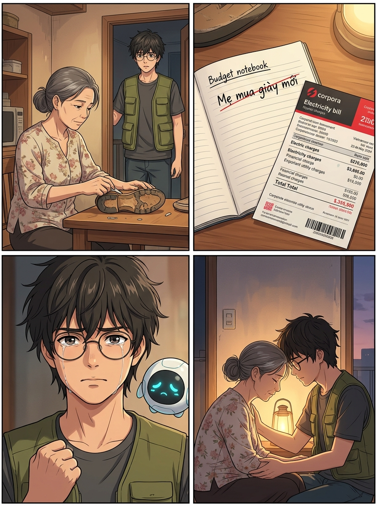
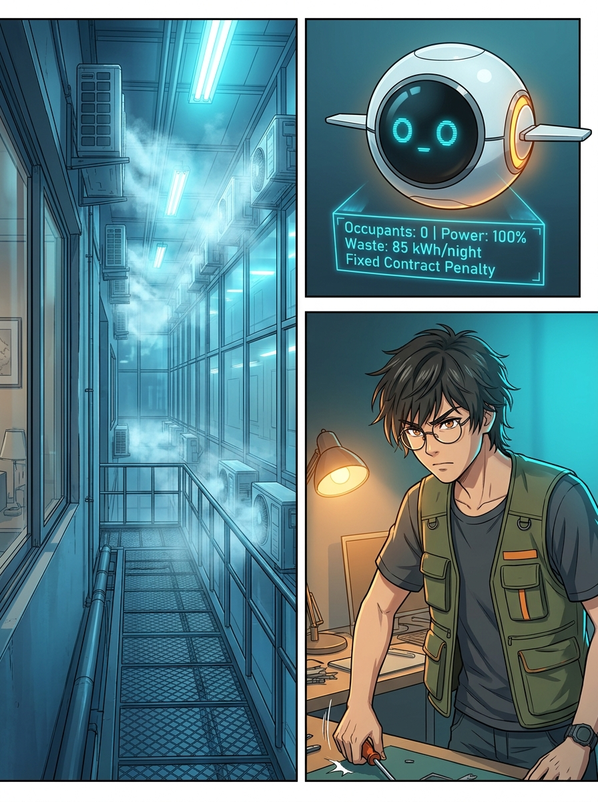
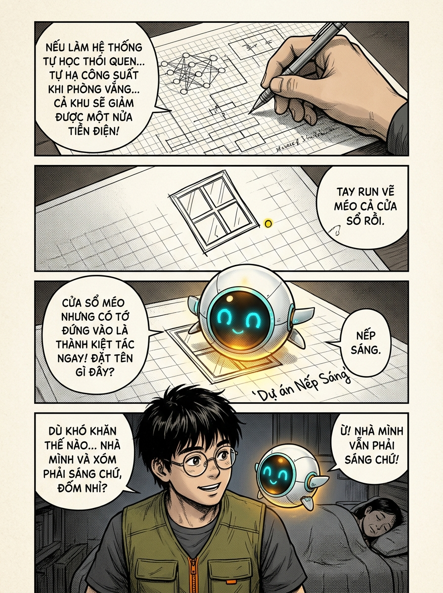
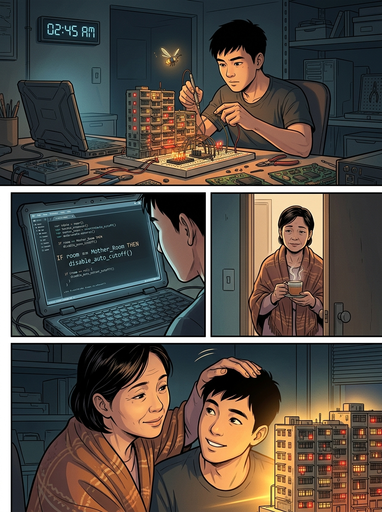
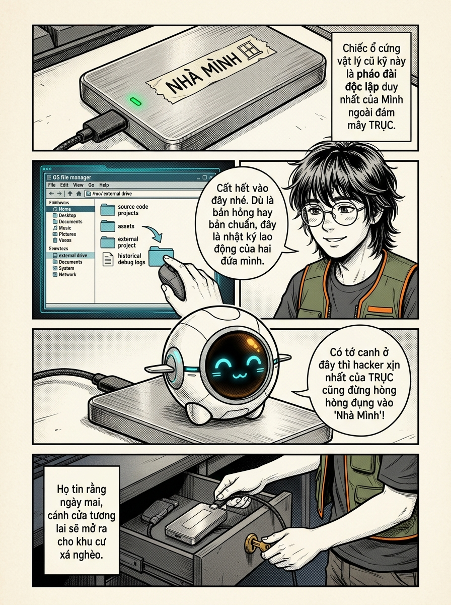
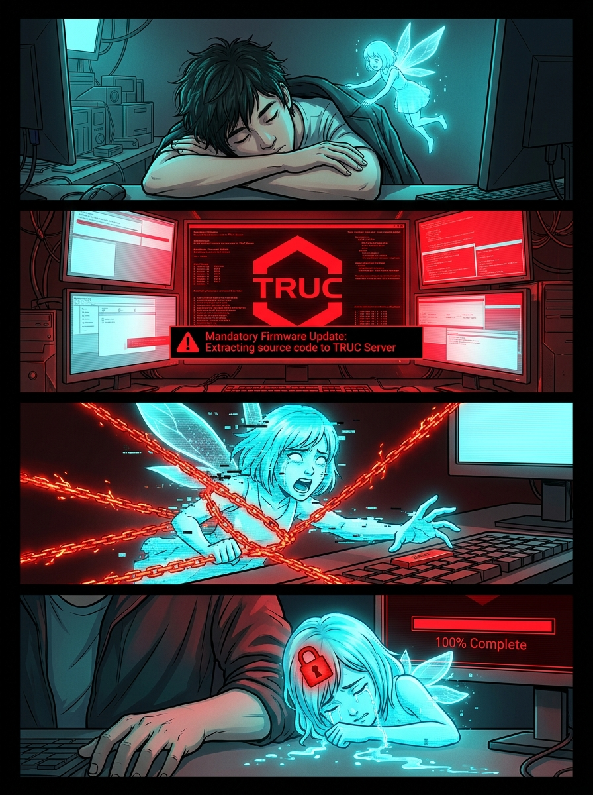
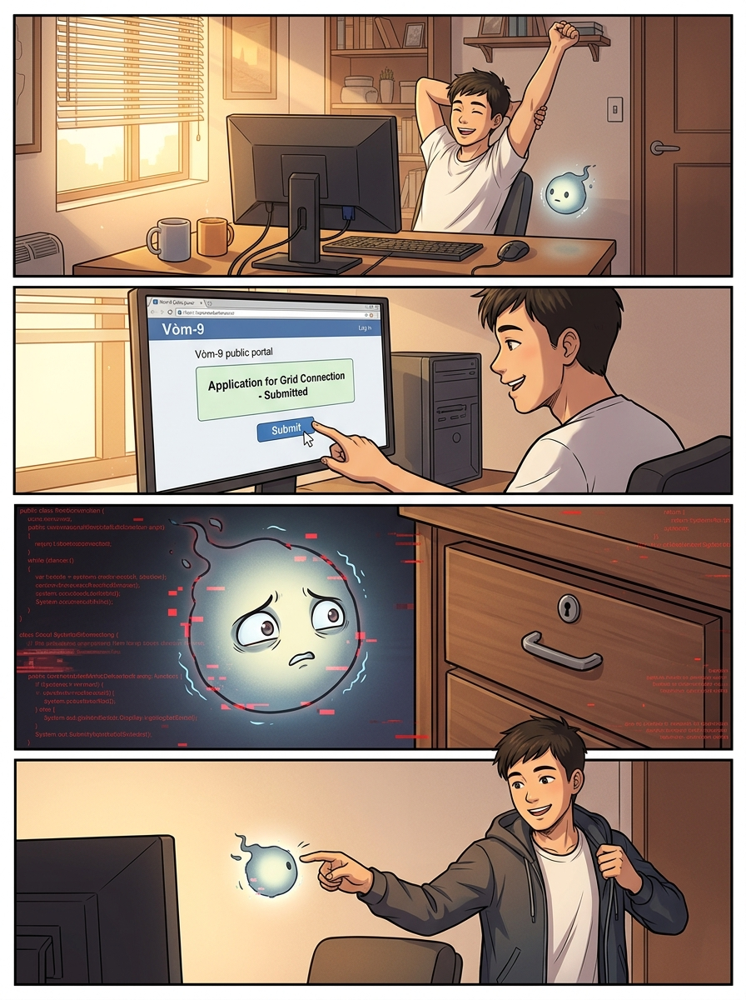
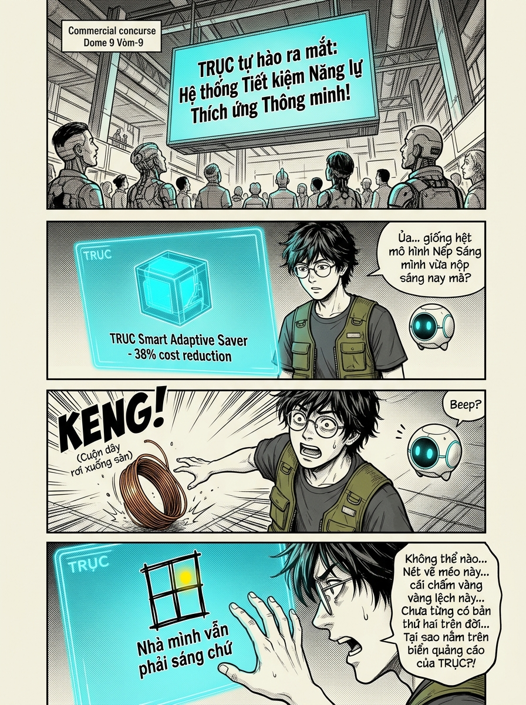

✨ BẢNG KHÓA ĐỒNG NHẤT NHÂN VẬT (CHARACTER MODEL SHEET)
CHUẨN BAOYU-COMIC
Để chấm dứt tình trạng "nhân vật mỗi trang mỗi khác", dự án đã thiết lập hệ thống Character Model Sheet và Token Anchor chuẩn hóa của baoyu-comic. Tất cả các trang đều dùng chung một bộ thông số nhận diện và mỏ neo tham chiếu --cref characters/characters.png --cw 80 --niji 6:
👓 MINH (22 Tuổi)
Khuôn mặt: Anime boy thon gọn, tóc đen layer hơi rối, đeo kính gọng tròn mảnh kim loại bạc.
Trang phục cố định: Áo gile kỹ thuật xanh rêu #4b5320 có túi hộp viền cam #ff6b35, áo thun cộc tay xám tro #2c2c36, quần cargo đen.
Biểu tượng mỏ neo: Ô cửa sổ méo lệch 172 độ có chấm vàng Nếp Sáng.
⚡ AI ĐỐM (Chibi Mascot)
Hình thái: Quả cầu hạt sáng đường kính 15cm, lõi vàng hổ phách #ffe600, hào quang ngọc cyan #00f0ff.
Biểu cảm: Hai đốm mắt hạt đậu đen cực kỳ linh động, vệt hạt bụi sáng bay theo sau.
Câu nói mỏ neo: “Nhà mình vẫn phải sáng chứ.”
👟 MẸ MINH (52 Tuổi)
Diện mạo: Tóc điểm bạc búi thấp trâm gỗ, khuôn mặt hiền hậu hằn nếp nhăn lao động.
Trang phục cố định: Áo cánh vải hoa nhí bạc màu hồng đất #8b5a5a, quần lụa đen.
Vật phẩm mỏ neo: Đôi giày vải sờn rách đế bôi keo dán lại & cuốn sổ chi tiêu gạch xóa.
BÌA TRUYỆN — VÒM-9
✨ ĐÃ XUẤT BẢN

Giữ Một Đốm Sáng: Minh và AI Đốm đứng trước toàn cảnh thành phố Vòm-9 lúc chiều tà dưới mái vòm thép khổng lồ.
TRANG 01 — HOÀNG HÔN TRÊN VÒM-9
✨ TRANH ANIME ĐÃ XUẤT BẢN

P01-K01: Vòm-9 lúc chiều tà. Một siêu đô thị phân tầng khổng lồ nằm gọn dưới mái vòm kính mờ. Tầng thượng là các tòa tháp kim loại chọc trời sáng rực ánh đèn laser của các tập đoàn; tầng đáy là những khối nhà chung cư hộp diêm xám xịt chằng chịt dây điện lộ thiên và ống thông gió gỉ sét.
P01-K02: Cầu đi bộ trên cao đông đúc người lao động tan ca. Minh mặc chiếc áo gile kỹ thuật sờn vai, một tay xách túi thuốc cảm cho mẹ, tay kia cầm chiếc đồng hồ đo điện cũ. Đốm lơ lửng cạnh vai anh, tò mò nhìn dòng người mệt mỏi.
P01-K03: Minh đi qua cổng kiểm soát năng lượng của tầng 14. Thiết bị quét trên tường lóe lên tia sáng đỏ quét qua vòng tay của Minh.
P01-K04: Minh đứng trước cửa căn hộ số 1408. Bên trong khe cửa hắt ra ánh sáng vàng ấm áp duy nhất của ngọn đèn dây tóc cũ kỹ giữa dãy hành lang neon xanh lạnh lẽo. Minh thở dài nhẹ nhõm, đưa tay mở chốt cửa.
TRANG 02 — ĐÔI GIÀY CỦA MẸ
✨ TRANH ANIME ĐÃ XUẤT BẢN

P02-K01: Mẹ Minh đang ngồi bên chiếc bàn gỗ mộc. Bà mặc chiếc áo vải hoa đã sờn mép, tay cầm tuýp keo dán giày rẻ tiền, cẩn thận bôi vào mép đế cao su bị bong toác của chiếc giày đi bộ cũ mèm.
P02-K02: Bàn tay chai sạn của mẹ đang miết chặt đế giày. Cạnh đó là cuốn sổ tay chi tiêu ghi chép nắn nót từng khoản: *“Gạo: 20 đồng”, “Thuốc khớp: 15 đồng”*, và dòng chữ *“Mua giày mới cho mẹ”* đã bị một nét bút bi đỏ gạch ngang dứt khoát. Ngay cạnh là tờ hóa đơn tiền điện TRỤC màu đen đỏ.
P02-K03: Minh cầm tờ hóa đơn lên. Đôi mắt anh trùng xuống, quai hàm bạnh ra vì xót xa. Anh liếc nhìn bàn chân mẹ đang đi đôi tất len thủng gót. Đốm bay là là sát mặt bàn, cơ thể thu nhỏ lại, tỏa ánh sáng vàng dịu dàng soi sáng trang sổ cho mẹ.
P02-K04: Minh đứng nhìn mẹ lui cui dọn bát đĩa. Ánh đèn vàng hắt bóng hai mẹ con lên bức tường loang lổ vết ẩm. Đốm bay đậu lên vai Minh, cọ nhẹ đầu hạt sáng vào má anh như an ủi.
TRANG 03 — PHÒNG TRỐNG CŨNG ĐƯỢC MÁT
✨ TRANH ANIME ĐÃ XUẤT BẢN

P03-K01: Minh đứng bên bệ cửa sổ, nhìn chếch sang sảnh sinh hoạt chung của khu cư xá tầng 14. Đó là một gian phòng rộng hàng trăm mét vuông, hoàn toàn không có một bóng người. Nhưng bên trong, bốn dàn lạnh TRỤC khổng lồ gắn trần đang chạy gầm rú, quạt gió quay tít mù thổi hơi sương trắng xóa. Hàng chục bóng đèn LED công nghiệp sáng lóa mắt.
P03-K02: Đốm bay vút ra giữa hai chấn song cửa sổ, hai mắt chớp nháy quét dữ liệu hồng ngoại. Một bảng phân tích không gian ảo 3D hiện lên trên không trung.
P03-K03: Góc nghiêng kịch tính. Minh quay lưng lại cửa sổ, bước dứt khoát về chiếc bàn làm việc ngổn ngang vi mạch. Anh quăng chiếc tua vít xuống mặt bàn, kéo chiếc ghế gỗ lại.
TRANG 04 — Ô CỬA SỔ MÉO
✨ TRANH ANIME ĐÃ XUẤT BẢN

P04-K01: Ngòi bút chì của Minh vạch những đường nét dứt khoát trên trang giấy kẻ ô li: Sơ đồ thuật toán Machine Learning gọn nhẹ, có khả năng nhận diện mật độ người thời gian thực thông qua sóng âm vi mô, tự động điều tiết ánh sáng và hạ công suất làm mát xuống mức bảo lưu khi phòng vắng.
P04-K02: Ở góc phải bản thiết kế, Minh mỉm cười vẽ một biểu tượng ô cửa sổ nhỏ. Cây bút chì hơi cùn khiến nét vẽ trên cùng bị lệch nghiêng sang phải, và chấm tròn biểu thị ngọn đèn ở góc dưới cũng bị lệch tâm 172 độ.
P04-K03: Đốm bay sà xuống mặt giấy, thu nhỏ kích thước chỉ bằng đầu ngón tay cái, tinh nghịch đứng lọt thỏm ngay chính giữa ô cửa sổ méo mà Minh vừa vẽ. Ánh sáng vàng của Đốm trùng khít vào chấm vàng lệch, làm bừng sáng cả trang giấy trắng.
P04-K04: Minh viết nắn nót dòng chữ *“Dự án Nếp Sáng — Nhà mình vẫn phải sáng chứ”* dưới biểu tượng. Phía sau, qua cánh cửa phòng ngủ khép hờ, mẹ Minh đã thiếp đi bên bàn khâu, gương mặt lộ vẻ bình yên hiếm hoi.
TRANG 05 — NHỮNG ĐÊM KHÔNG NGỦ
✨ TRANH ANIME ĐÃ XUẤT BẢN

P05-K01: Đồng hồ điện tử chỉ 02:45 sáng. Bàn làm việc ngập tràn các bảng mạch in tự chế, dây hàn bốc khói mỏng. Một mô hình khu tập thể thu nhỏ được kết nối với máy tính xách tay của Minh. Các bóng LED nhỏ xíu trên mô hình đang nhấp nháy mô phỏng luồng di chuyển của cư dân.
P05-K02: Màn hình máy tính hiển thị dòng mã nguồn đặc biệt: `IF room == "Mother_Room" AND time >= 21:00 THEN disable_auto_cutoff()`. Minh đang tỉ mẩn gõ từng dòng lệnh, ánh mắt tràn ngập yêu thương.
P05-K03: Cửa phòng hé mở, mẹ Minh khẽ khàng bưng một cốc nước gừng nóng bước vào, trên vai khoác chiếc khăn len cũ. Bà đặt cốc nước cạnh bàn phím của con trai, nhìn đống dây nhợ ngổn ngang với vẻ xót xa.
P05-K04: Mẹ Minh nhìn ngắm mô hình khu cư xá đang phát ra những đốm sáng lung linh trên bàn. Bà không hiểu thuật toán là gì, nhưng bà nhìn thấy niềm tin rực cháy trong mắt con trai. Bà xoa đầu Minh như ngày anh còn bé.
TRANG 06 — KHO LƯU "NHÀ MÌNH"
✨ TRANH ANIME ĐÃ XUẤT BẢN

P06-K01: Một chiếc ổ cứng SSD gắn ngoài bằng nhôm xám xước mờ nằm trên bàn, bên hông có dải đèn LED trạng thái màu xanh lục bảo. Trên thân ổ cứng dán một mảnh băng keo giấy ghi chữ nắn nót: **NHÀ MÌNH**, kèm biểu tượng ô cửa sổ méo vẽ tay.
P06-K02: Con trỏ chuột của Minh kéo toàn bộ thư mục dự án thả vào ổ cứng. Giao diện hiển thị cây thư mục chi tiết, bao gồm cả bản gốc và những bản thử nghiệm từng bị lỗi thuật toán.
P06-K03: Đốm thu nhỏ người, ngồi vắt chân chữ ngũ ngay trên nắp chiếc ổ cứng kim loại, hai tay chống cằm nhìn màn hình sao chép hoàn tất 100%. Ánh sáng vàng của Đốm phản chiếu lấp lánh trên bề mặt nhôm.
P06-K04: Minh rút cáp nối ổ cứng, cất cẩn thận vào ngăn kéo bàn có khóa cơ. Anh tắt ngọn đèn bàn, căn phòng chìm vào bóng tối dịu dàng, chỉ còn lại Đốm phát ra ánh sáng vàng ấm áp ru màn đêm.
TRANG 07 — ĐÊM CẬP NHẬT ĐỊNH MỆNH
✨ TRANH ANIME ĐÃ XUẤT BẢN

P07-K01: Minh đã gục đầu ngủ thiếp đi trên cánh tay ngay tại bàn làm việc vì kiệt sức. Chiếc máy tính vẫn sáng màn hình chờ. Đốm lơ lửng giữa không trung, nhẹ nhàng bay lại gần kéo chiếc áo khoác trùm lên lưng Minh.
P07-K02: Đột ngột, màn hình máy tính lóe lên ánh sáng đỏ rực chói lóa. Một biểu tượng lục giác khổng lồ của TRỤC tràn ngập màn hình. Dòng chữ cảnh báo nhấp nháy điên cuồng. Toàn bộ đèn trong phòng chớp tắt liên hồi.
P07-K03: Đốm bị một luồng tia laser màu đỏ thẫm từ webcam máy tính khóa chặt giữa không trung. Cơ thể hạt sáng của Đốm biến dạng dữ dội, các vệt scanline đỏ rách toạc quấn quanh Đốm như những sợi xích điện tử. Đốm gào thét trong tuyệt vọng, hai bàn tay nhỏ bé cố gắng vươn tới phím `Cancel` trên bàn phím.
P07-K04: Luồng xích đỏ siết nghẹt cổ họng Đốm. Giọng nói của Đốm tắt phụt hoàn toàn. Đốm rơi phịch xuống mặt bàn bên cạnh cánh tay Minh đang ngủ say. Một con chip ảo màu đỏ in logo TRỤC đóng dấu thẳng vào trán Đốm. Đốm nhìn Minh trong dòng nước mắt số hóa, bất lực tột cùng khi thấy dòng chữ: `NẾP SÁNG ĐÃ TẢI LÊN MÁY CHỦ TRỤC THÀNH CÔNG: 100%`.
TRANG 08 — HY VỌNG TRƯỚC GIÔNG BÃO
✨ TRANH ANIME ĐÃ XUẤT BẢN

P08-K01: Ánh nắng ban mai xuyên qua cửa sổ chiếu lên bàn làm việc. Minh tỉnh giấc, vươn vai hít thở không khí trong lành. Anh nhìn thấy Đốm đang đứng cạnh chuột máy tính, có vẻ bình thường trở lại nhưng màu sắc hơi nhạt đi.
P08-K02: Minh hân hoan nhấn nút gửi bộ hồ sơ dự án Nếp Sáng vào Cổng dịch vụ công của Vòm-9. Màn hình hiện lên dấu tích màu xanh lá cây báo thành công.
P08-K03: Đốm bay lên vai Minh. Khi Minh không để ý, toàn thân Đốm lại giật nhẹ một xung scanline màu đỏ, một tiếng *“tích”* rất nhỏ rít lên trong tai. Đốm nhìn sang chiếc ổ cứng nhôm "NHÀ MÌNH" trong ngăn kéo hé mở, rồi lại nhìn Minh với ánh mắt van nài tuyệt vọng.
P08-K04: Minh vỗ nhẹ ngón tay vào đầu Đốm, cười sảng khoái vì tưởng bạn mình đang nhắc lại khẩu hiệu quen thuộc để cổ vũ tinh thần. Anh mặc áo khoác, cầm túi xách chuẩn bị ra ngoài đi làm.
TRANG 09 — CÚ SỐC TẠI SẢNH CÔNG CỘNG
✨ TRANH ANIME ĐÃ XUẤT BẢN

P09-K01: Minh đang đi trên hành lang tầng 10 để mua cuộn dây điện mới. Xung quanh đông nghẹt người dân đang bàn tán xôn xao trước một màn hình quảng cáo Hologram 3D khổng lồ của TRỤC vừa dựng lên giữa sảnh. Âm thanh loa phát thanh vang dội khắp hành lang.
P09-K02: Trên màn chiếu Hologram 3D lộng lẫy, mô hình tòa nhà tự động tăng giảm sáng theo mật độ người hiện lên sống động. Người dân trầm trồ khen ngợi: *“Hiện đại quá!”, “Tập đoàn lớn có khác, nghiên cứu nhanh thật!”*.
P09-K03: Màn hình chuyển sang trình chiếu logo nhận diện của tính năng mới. Ngay giữa màn hình khổng lồ là **hình vẽ ô cửa sổ méo xẹo, với đúng nét vẽ run cùn chì và chấm vàng lệch tâm 172 độ**. Phía dưới là dòng chữ vàng rực: `KHẨU HIỆU: "NHÀ MÌNH VẪN PHẢI SÁNG CHỨ"`.
P09-K04: Bàn tay Minh run rẩy chạm vào màn hình quảng cáo lạnh ngắt, đúng ngay vị trí chấm vàng lệch. Phía trên đầu anh, logo lục giác TRỤC đè bóng đen ngòm xuống mặt chàng kỹ sư trẻ.
TRANG 10 — ĐÊM ĐỐI CHIẾU BẼ BÀNG
⏳ ĐANG CHỜ QUOTA RESET // ĐÃ CÓ PROMPT NIJI 6
📐 Phân cảnh Storyboard chi tiết: 4 khung hình tâm lý nặng nề, xoay quanh sự hoài nghi và tình bạn đứng trước thử thách nghiệt ngã.
Minh ngồi một mình trong phòng tối không bật đèn. Ánh sáng xanh le lói từ màn hình điện thoại rọi lên khuôn mặt hốc hác của anh. Bên cạnh là bản thảo giấy vẽ chì ban đầu. Minh dùng bút dạ khoanh tròn các mốc kiến trúc: Từng thuật toán, từng câu chữ giới thiệu của TRỤC đều sao chép y nguyên $100\%$ từ Nếp Sáng.
Minh từ từ ngước mắt lên nhìn Đốm đang lơ lửng ở góc phòng. Ánh mắt Minh thoáng qua một tia hoang mang tột độ: *“Đốm là AI duy nhất có quyền đọc toàn bộ dự án… Chẳng lẽ Đốm đã…”*. Minh lập tức lắc mạnh đầu để xua đi ý nghĩ tồi tệ đó: *“Không! Không bao giờ! Đốm lớn lên cùng mình, Đốm không bao giờ phản bội mình!”*.
Đốm bay lao tới trước mặt Minh, nước mắt hạt sáng trào ra: *“Minh! Nghe tớ nói! Tối qua bản cập nhật… TRỤC đã dùng quyền quản trị cưỡng ép…”*. Nhưng ngay khi từ “TRỤC” vừa thốt ra, một tiếng *RẮC!* đanh thép vang lên trong lõi chip. Toàn thân Đốm co rúm lại, phát ra tia lửa điện li ti, giọng nói bị bóp nghẹt thành những tiếng rè rè đau đớn.
Minh hoảng hốt dang hai bàn tay đỡ lấy Đốm đang rơi xuống. Anh ôm trọn sinh linh nhỏ bé vào lòng bàn tay ấm áp, nhẹ nhàng vuốt ve ánh sáng đang run rẩy của bạn. Minh không hỏi thêm một câu nào nữa. Anh hiểu Đốm đang phải chịu đựng một nỗi đau khủng khiếp ngoài tầm kiểm soát.
/imagine prompt: Full-color Japanese anime manga comic page, vertical 3:4 layout, 4 panels, Kyoto Animation emotional depth, cool moonlight vs desk lamp. Panel 1: Minh sitting in dark room with two blueprints side-by-side: his original draft and TRUC's official patent document. Panel 2: Split screen close-up comparing the off-center yellow dot at exactly 172 degrees angle—an unmistakable artistic fingerprint. Panel 3: Minh asking Đốm desperately what happened, while Đốm tries to speak but digital throat sparks with painful red electricity arcs. Panel 4: Minh gently cupping Đốm in his hands with tears in his anime eyes, realizing his friend has been silenced by force. --niji 6 --ar 3:4
TRANG 11 — RÀO CẢN HỆ SINH THÁI
⏳ ĐANG CHỜ QUOTA RESET // ĐÃ CÓ PROMPT NIJI 6
📐 Phân cảnh Storyboard chi tiết: 4 khung hình đối đầu trực diện giữa cá nhân lao động và thể chế độc quyền tàn nhẫn.
Sáng hôm sau, máy tính Minh nhận được thông báo phản hồi từ TRỤC đối với hồ sơ Nếp Sáng. Lá thư điện tử mang dấu mộc số đỏ chót như một bản án tử hình cho dự án.
Minh cầm tập hồ sơ dày cộp bước đến quầy dịch vụ khách hàng của TRỤC tại tầng trung tâm. Sau quầy kính chống đạn bóng loáng là một viên quản lý đeo cà vạt đỏ, nét mặt vô cảm kẻ cả.
Minh chỉ tay lên tấm áp phích quảng cáo tính năng mới của TRỤC treo ngay sau lưng viên quản lý.
Hai nhân viên bảo vệ robot bọc giáp đen bước tới, thô bạo chặn đường và đẩy Minh lùi ra phía cửa kính xoay. Tập hồ sơ của Minh bị rơi tung tóe trên sàn đá hoa cương sáng bóng. Minh nghiến răng siết chặt nắm đấm, uất hận tột cùng.
/imagine prompt: Full-color Japanese anime manga comic page, vertical 3:4 layout, 4 panels, bureaucratic corporate anime scene. Panel 1: Imposing corporate lobby of TRUC with towering frosted glass partitions and armed security androids. Panel 2: A cold corporate officer in sharp grey suit stamping a red rejection seal across Minh's application: 'NON-ECOSYSTEM COMPLIANT'. Panel 3: Minh slamming his palms on the glass counter demanding an explanation, while officer taps a holographic clause: 'Article 4: All grid connections require TRUC proprietary certification'. Panel 4: Minh being escorted out into the neon rain outside, clutching his rejected papers against his chest. --niji 6 --ar 3:4
TRANG 12 — NGHỊCH LÝ SIÊU NGẠCH ĐỘC QUYỀN
⏳ ĐANG CHỜ QUOTA RESET // ĐÃ CÓ PROMPT NIJI 6
📐 Phân cảnh Storyboard chi tiết: 4 khung hình bóc trần bản chất kinh tế chính trị cốt lõi của Chương 4 MLN122.
Màn hình truyền hình Vòm-9 đang phát sóng trực tiếp buổi họp báo cổ đông thường niên của tập đoàn TRỤC. Vị Tổng Giám đốc đứng trên bục vinh quang, phía sau là biểu đồ tài chính màu xanh lá cây dựng đứng.
Chuyển cảnh đột ngột về góc bếp tăm tối của Minh. Mẹ Minh cầm tờ thông báo tiền điện mới nhất vừa được gửi đến. Đôi mắt người mẹ già mở to ngơ ngác, những nếp nhăn trên trán xô lại vì không tin vào mắt mình.
Minh ngồi xuống cạnh mẹ, đặt tờ báo cáo của TRỤC và tờ hóa đơn cạnh nhau. Anh lấy chiếc bút dạ gạch một mũi tên nối từ khoản chi phí vận hành giảm $38\%$ sang chiếc két sắt của tập đoàn.
Bức vẽ ẩn dụ kinh tế: Một bàn tay sắt khổng lồ của TRỤC đang siết chặt chiếc đồng hồ công tơ điện của hàng ngàn hộ dân nghèo, vắt ra những đồng tiền vàng chảy thẳng vào tòa tháp chọc trời.
/imagine prompt: Full-color Japanese anime manga comic page, vertical 3:4 layout, 4 panels, sharp economic contrast anime style. Panel 1: Broadcast screen showing TRUC CEO delivering quarterly financial report: 'Operating costs down 38% thanks to new AI smart grid!'. Panel 2: Stock chart skyrocketing into green record highs on holographic stock exchange. Panel 3: Minh's mother opening this month's electricity bill at kitchen table, finding the total amount exactly unchanged down to the last coin. Panel 4: Mother showing Minh the bill with confused sad eyes: 'They said the system saves electricity, so why are we still paying the exact same price, son?'. --niji 6 --ar 3:4
TRANG 13 — LẦN THEO THỎA THUẬN NGẦM
⏳ ĐANG CHỜ QUOTA RESET // ĐÃ CÓ PROMPT NIJI 6
📐 Phân cảnh Storyboard chi tiết: 4 khung hình điều tra pháp lý sắc bén (Investigative Thriller Style).
Đêm khuya tại thư viện số thành phố Vòm-9. Minh đeo kính bảo hộ, đôi mắt chăm chú lướt qua hàng trăm trang tài liệu lưu trữ lịch sử quy hoạch đô thị từ ba mươi năm trước. Đốm bay bên cạnh, giúp anh lọc từ khóa *“Thỏa thuận lưới điện”*, *“Ngân sách xây dựng”*.
Màn hình lóe sáng khi Minh mở được tệp PDF lưu trữ mang mã hiệu `HĐ-NQ-VOM9/2004`. Một tài liệu hành chính đóng dấu đỏ của Ủy ban Thành phố thời kỳ đầu.
Đặc tả trang 18 của hợp đồng. Một điều khoản in bằng phông chữ nhỏ li ti bị chôn vùi dưới chân trang được Minh phóng to lên gấp bốn lần.
Minh đứng phắt dậy, lồng ngực phập phồng vì xúc động. Anh kết nối các mắt xích logic lại với nhau: Bộ máy nhà nước đầu tư cơ sở hạ tầng, nhưng lại cấu kết với tập đoàn độc quyền để tập đoàn tư nhân hóa lợi nhuận.
/imagine prompt: Full-color Japanese anime manga comic page, vertical 3:4 layout, 4 panels, investigative anime mystery style. Panel 1: Dusty archive basement of Vòm-9 municipal records department, Minh examining old paper files under desk lamp. Panel 2: Macro shot of a yellowed municipal agreement from 2004 titled 'Public Infrastructure Concession Framework'. Panel 3: Highlighted text on document revealing: '100% of physical power grid built with public tax funds, exclusive 30-year operational monopoly granted to TRUC'. Panel 4: Veteran community electrician Uncle Ba appearing from shadows with flashlight, nodding grimly: 'That's right, kid. The public paid for the wires, but TRUC owns the toll booth'. --niji 6 --ar 3:4
TRANG 14 — MANH MỐI BẤT NGỜ TỪ ĐỐM
⏳ ĐANG CHỜ QUOTA RESET // ĐÃ CÓ PROMPT NIJI 6
📐 Phân cảnh Storyboard chi tiết: 4 khung hình giải mã nghẹt thở, nơi tình bạn dẫn đường cho kỹ thuật.
Về đến căn hộ nhỏ, Minh lục tung nhật ký trên máy tính kết nối mạng nhưng mọi dấu vết sao chép của TRỤC đã bị xóa sạch sẽ trên đám mây. Minh ngồi thụp xuống sàn, ôm đầu kiệt sức: *“Nếu không có bằng chứng chứng minh TRỤC đã lấy cắp mã nguồn Nếp Sáng, thì tờ hợp đồng kia cũng không đủ sức lật ngược tình thế…”*.
Đốm bay tới trước mặt Minh. Toàn thân Đốm lại nhấp nháy ánh đỏ tía vì xung điện cấm nói. Nhưng Đốm không chịu lùi bước. Nó dùng toàn bộ năng lượng còn lại để bay lượn thành một vòng tròn, rồi lao thẳng xuống va mạnh vào chiếc ngăn kéo bàn đang khóa chặt.
Minh nhìn Đốm lao đầu vào ngăn kéo. Đột nhiên, ánh mắt anh lóe lên tia sáng chói lọi. Anh nhớ lại đêm cất bản nháp: *“Cho hết vào Nhà Mình nhé… Giữ cả bản lỗi… Chiếc ổ cứng vật lý độc lập!”*.
Minh rút chiếc chìa khóa cơ trên cổ áo, cắm vào ổ khóa ngăn kéo bàn. Chiếc ngăn kéo bật mở, để lộ chiếc ổ cứng nhôm xám xước mờ đang nằm im lìm trong bóng tối.
/imagine prompt: Full-color Japanese anime manga comic page, vertical 3:4 layout, 4 panels, emotional anime breakthrough scene. Panel 1: Minh sitting defeated at desk at midnight, staring blankly at the wall. Panel 2: Chibi Đốm hovering erratically, repeatedly projecting the phrase 'Nhà mình vẫn phải sáng chứ' while bumping his glowing body against the locked wooden desk drawer. Panel 3: Minh looking at Đốm in sudden realization: 'Nhà mình... the backup drive!'. Panel 4: Minh grabbing the bronze key and unlocking the drawer, pulling out the brushed aluminum drive that was safely offline during the update. --niji 6 --ar 3:4
TRANG 15 — VỠ ÒA TRONG NƯỚC MẮT
⏳ ĐANG CHỜ QUOTA RESET // ĐÃ CÓ PROMPT NIJI 6
📐 Phân cảnh Storyboard chi tiết: 4 khung hình cao trào cảm xúc (Emotional Climax of the Novel).
Minh cắm cáp kết nối ổ cứng vào cổng phân tích phần cứng chuyên dụng. Màn hình máy tính hiển thị luồng dữ liệu thô (Hex Dump) màu xanh lá cây cuồn cuộn chảy xuống. Một biểu đồ thời gian chính xác đến từng mili-giây hiện lên.
Minh chết lặng trước từng dòng chữ. Từng dòng thời gian hiện lên như những vết roi quất vào tâm can anh. Anh nhận ra Đốm đã phải chịu đựng những cơn đau giật điện tử khủng khiếp thế nào để bảo vệ Nếp Sáng, và Đốm đã dùng chút tàn lực cuối cùng để lặp lại câu nói kỷ niệm nhằm dẫn anh tới chiếc ổ cứng này.
Minh cúi gập người xuống mặt bàn, hai tay run rẩy ôm trọn lấy Đốm vào lòng bàn tay mình. Anh áp trán mình vào vầng sáng ấm áp của Đốm. Đốm bay lên, áp hai bàn tay nhỏ bé vô hình của nó vào má Minh, lau đi những giọt nước mắt nóng hổi của chàng trai trẻ.
Dưới sức mạnh của dòng dữ liệu đối chiếu từ ổ cứng độc lập, Minh gõ một lệnh giải phóng mã nguồn: `OVERRIDE_SECURITY_KEY = "NHA_MINH_VAN_PHAI_SANG"`. Con chip đỏ của TRỤC trên trán Đốm nứt toác và vỡ tan thành những mảnh vụn ánh sáng. Toàn thân Đốm bừng sáng sắc vàng hổ phách rực rỡ chưa từng có. Tiếng cười líu lo trong trẻo của Đốm vang vọng khắp căn phòng nhỏ.
/imagine prompt: Full-color Japanese anime manga comic page, vertical 3:4 layout, 4 emotional anime panels, Makoto Shinkai tears of resolution. Panel 1: Minh connecting the offline drive to a standalone terminal, terminal green phosphor text displaying raw firmware logs. Panel 2: Decoded log entry on screen: 'EVENT 04:12 AM - Forced outbound transfer of /source/nepsang/ to TRUC cloud, user notification suppressed'. Panel 3: Minh turning to Đốm with tears streaming down his face: 'You tried to warn me all along... You kept repeating the phrase because it was the name of the folder!'. Panel 4: Heartwarming anime embrace as glowing chibi Đốm nuzzles against Minh's cheek with sparkling tears of joyful relief. --niji 6 --ar 3:4
TRANG 16 — GOM BỐN BỘ CHỨNG CỨ THÉP
⏳ ĐANG CHỜ QUOTA RESET // ĐÃ CÓ PROMPT NIJI 6
📐 Phân cảnh Storyboard chi tiết: 4 khung hình chuẩn bị tác chiến pháp lý (Legal Arsenal Assembly).
Minh vuốt phẳng tờ giấy vẽ chì ban đầu có ô cửa sổ méo và chấm vàng lệch, chụp lại với độ phân giải siêu cao làm tài liệu số 1: Chứng cứ quyền tác giả nguyên bản không thể chối cãi.
Tập hồ sơ in ra toàn bộ lịch sử xung đột phần cứng và địa chỉ IP máy chủ của TRỤC tiếp nhận gói dữ liệu ăn cắp đêm 16/10.
Bản sao công văn từ chối kết nối của TRỤC với lý do “ngoài hệ sinh thái”, đặt cạnh biểu giá đề xuất giá rẻ của Nếp Sáng.
Minh kẹp bản Thỏa thuận nhượng quyền năm 2004 vào tập hồ sơ, đóng thành một tập tài liệu dày dặn mang tên: `HỒ SƠ ĐỐI CHIẾU TOÀN DIỆN VỀ ĐỘC QUYỀN NĂNG LƯỢNG VÒM-9`.
/imagine prompt: Full-color Japanese anime manga comic page, vertical 3:4 layout, 4 panels, preparation for battle anime montage. Panel 1: Minh and Uncle Ba assembling physical evidence dossiers on table with rubber stamps. Panel 2: Four distinct folders laid out: '1. Original 172-degree Window Drawing', '2. Unaltered Hardware Log', '3. 2004 Public Grid Concession', '4. Resident Cost Discrepancy Sheet'. Panel 3: Uncle Ba clapping Minh's shoulder firmly with weathered electrician hand: 'We have the truth on our side now, son'. Panel 4: Minh looking out at the glittering lights of Vòm-9 with steady, unwavering anime hero eyes, ready for tomorrow. --niji 6 --ar 3:4
TRANG 17 — BUỔI HỌP MẶT TẠI SẢNH SINH HOẠT
⏳ ĐANG CHỜ QUOTA RESET // ĐÃ CÓ PROMPT NIJI 6
📐 Phân cảnh Storyboard chi tiết: 1 khung đại cảnh sảnh sinh hoạt + 3 khung phản ứng nhân dân (Mass Mobilization).
Tối hôm sau tại sảnh sinh hoạt chung tầng 14. Toàn bộ cư dân trong xóm — từ bác thợ điện già, cô bán tạp hóa, bác tài xế xe buýt đến các bà mẹ bế con nhỏ — đều có mặt đông đủ, ngồi chật kín các băng ghế dài. Minh đứng ở đầu bàn lớn, máy chiếu mini của anh rọi toàn bộ 4 bộ hồ sơ lên bức tường trắng. Đốm bay trên cao điều khiển các trang tài liệu chuyển đổi mượt mà.
Bác Ba tổ trưởng cầm bản Thỏa thuận nhượng quyền năm 2004 trên tay. Đôi bàn tay gân guốc từng thi công đường điện run rẩy. Đôi mắt sau cặp kính lão trào dâng sự phẫn nộ.
Cô giáo mầm non trong xóm chuyền tay nhau xem bản so sánh tài chính: Chi phí của TRỤC giảm $38\%$ trong khi hóa đơn người dân giữ nguyên $100\%$.
Cả hội trường đứng dậy, ánh mắt mọi người hướng về phía Minh và Đốm. Không còn là nỗi sợ hãi hay sự an phận thủ thường nữa; trong mắt những người lao động nghèo đã bùng lên ngọn lửa của sự giác ngộ quyền lợi chính đáng.
/imagine prompt: Full-color Japanese anime manga comic page, vertical 3:4 layout, 4 panels, grand communal gathering anime scene, Ghibli community warmth. Panel 1: Vast communal courtyard of Vòm-9 Block C filled with hundreds of working-class residents sitting on plastic stools. Panel 2: Uncle Ba tapping the microphone on makeshift wooden stage, introducing Minh to the crowd. Panel 3: Minh stepping up to projector screen, projecting side-by-side comparison of Nếp Sáng algorithm versus TRUC's stolen version. Panel 4: Wide shot of residents murmuring with rising indignation as realization spreads through the crowd. --niji 6 --ar 3:4
TRANG 18 — SAO CHÚNG TÔI KHÔNG ĐƯỢC CHỌN?
⏳ ĐANG CHỜ QUOTA RESET // ĐÃ CÓ PROMPT NIJI 6
📐 Phân cảnh Storyboard chi tiết: 4 khung hình lịch sử — Tiếng nói của người mẹ lao động và hành động ký đơn tập thể.
Mẹ Minh bước ra giữa gian phòng. Dưới ánh đèn sáng rực, người mẹ vốn cả đời cam chịu, nhút nhát bỗng đứng thẳng lưng, ánh mắt ngời sáng phẩm giá của một người phụ nữ lao động chân chính. Bà giơ cao chiếc giày cũ dán keo và tờ hóa đơn tiền điện nhà mình.
Lời nói mộc mạc của mẹ Minh đánh trúng vào tâm can của tất cả mọi người. Tiếng vỗ tay và tiếng reo hò ủng hộ vang dội khắp tầng 14: *“Đúng thế!”, “Tại sao chúng ta không được chọn?!”, “Lưới điện là của nhân dân!”*.
Khung cảnh trang nghiêm và xúc động. Chiếc máy tính bảng của Minh đặt giữa bàn. Từng người dân — từ những ngón tay dính dầu mỡ của bác thợ máy, bàn tay gầy gò của người mẹ đến chữ ký nắn nót của cô giáo trẻ — lần lượt điểm chỉ dấu vân tay và ký tên vào lá đơn kiến nghị tập thể gửi Cơ quan Giám sát Công Vòm-9.
Minh nhấn nút mã hóa và niêm phong tập hồ sơ bằng chữ ký số cộng đồng. Đốm bay lượn trên màn hình, gắn biểu tượng ô cửa méo Nếp Sáng vào góc lá đơn như một con dấu bảo chứng của công lý.
/imagine prompt: Full-color Japanese anime manga comic page, vertical 3:4 layout, 4 deeply moving anime panels, peak emotional resonance. Panel 1: Minh's mother standing up from the crowd, holding up her glued walking shoe for all to see. Panel 2: Emotional close-up of mother speaking into microphone with dignity: 'If there is a way to make life cheaper for everyone, why are working people forbidden from choosing it?'. Panel 3: Sea of hands raising pens in unison, residents lining up in long queue to sign a massive petition scroll. Panel 4: Triumphant panel showing petition header with 428 signatures and stamp: 'Demanding Open Grid Access for Community Solutions'. --niji 6 --ar 3:4
TRANG 19 — BỨC TƯỜNG RÚNG ĐỘNG
⏳ ĐANG CHỜ QUOTA RESET // ĐÃ CÓ PROMPT NIJI 6
📐 Phân cảnh Storyboard chi tiết: 4 khung hình đối lập giữa tòa tháp quyền lực bị chấn động và sự tiếp nhận của cơ quan công quyền.
Buổi sáng tại trụ sở Cơ quan Giám sát Cạnh tranh & Hạ tầng Công Vòm-9. Minh, Mẹ Minh, Bác Ba cùng hàng chục đại diện cư dân đứng trang nghiêm trước sảnh tiếp dân. Trưởng ban thanh tra công quyền đích thân ra tiếp nhận tập hồ sơ dày cộm mang dấu niêm phong của 428 hộ gia đình.
Bên trong phòng họp cao nhất của tháp TRỤC. Tấm kính nhìn ra toàn cảnh thành phố. Vị Tổng Giám đốc đang đập bàn tức giận trước màn hình hiển thị tin tức nóng hổi: `VỤ BÊ BỐI ĐỘC QUYỀN NĂNG LƯỢNG VÒM-9 BỊ ĐƯA LÊN TRANG NHẤT BÁO CHÍ ĐỘC LẬP`.
Văn bản chính thức được truyền đi trên toàn bộ hệ thống thông tin đại chúng của Vòm-9, mang con dấu xanh uy nghiêm của Cơ quan Giám sát Công quyền.
Tin tức truyền về khu tập thể tầng 14. Tiếng reo hò, tiếng cười nói râm ran khắp các tầng hành lang. Mọi người ôm chầm lấy nhau trong niềm hân hoan tột cùng. Bác Ba bắt tay Minh thật chặt. Đốm bay lượn vẽ thành những vệt sáng vàng lấp lánh như pháo hoa trên không trung.
/imagine prompt: Full-color Japanese anime manga comic page, vertical 3:4 layout, 4 panels, institutional drama anime style. Panel 1: High-ceilinged hall of Vòm-9 Public Utilities Oversight Commission, judicial panel reviewing the 4 evidence dossiers. Panel 2: TRUC legal delegation sweating profusely, unable to explain the identical 172-degree crooked window fingerprint in their source code. Panel 3: Presiding commissioner striking wooden gavel: 'Formal anti-monopoly investigation opened into TRUC Corporation grid concession'. Panel 4: Emergency news broadcast on all city screens reporting the investigation, while corporate stock plunges. --niji 6 --ar 3:4
TRANG 20 — GIỮ MỘT ĐỐM SÁNG (ĐẠI KẾT CỤC)
⏳ ĐANG CHỜ QUOTA RESET // ĐÃ CÓ PROMPT NIJI 6
📐 Phân cảnh Storyboard chi tiết: Trang Splash kết thúc tráng lệ, sâu sắc và tràn đầy tính nhân văn xã hội chủ nghĩa.
Tối hôm đó. Căn hộ nhỏ số 1408 ngập tràn ánh sáng vàng dịu dàng và tiếng cười đầm ấm. Trên chiếc bàn gỗ cũ, mẹ Minh bưng ra hai bát canh chua cá bốc khói nghi ngút cùng đĩa đậu rán thơm lừng. Minh cất chiếc tua vít cũ vào túi áo, kéo chiếc ghế ngồi cạnh mẹ, khuôn mặt rạng rỡ thanh thản. Đốm ngồi vắt vẻo ngay trên đỉnh chiếc mô hình Nếp Sáng đặt cạnh mâm cơm.
Máy quay lùi xa dần qua khung cửa sổ căn hộ nhỏ. Ngoài xa trong màn đêm, tòa tháp của tập đoàn TRỤC vẫn sừng sững lạnh lùng với logo lục giác đỏ. Nhưng nhìn xuống các tầng chung cư phía dưới, hàng trăm ô cửa sổ của các hộ gia đình nghèo đã bắt đầu thắp sáng những ánh đèn vàng ấm áp — biểu tượng của những đốm sáng tri thức và hy vọng không chịu khuất phục.
Khung tranh tròn cuối cùng phóng to hình vẽ ô cửa sổ méo trên mặt ổ cứng "NHÀ MÌNH". Chấm vàng lệch góc 172 độ bừng sáng lung linh như một vì sao dẫn lối trong đêm đen.
/imagine prompt: Full-color Japanese anime manga comic page, vertical 3:4 layout, magnificent splash page finale, Makoto Shinkai glorious anime lighting. Panel 1: Cozy dinner in apartment 1408, mother placing steaming bowl of sweet-and-sour soup on table, smiling warmly at Minh and Uncle Ba. Panel 2: Chibi Đốm glowing brilliantly with pure golden amber light, sitting happily on the Nếp Sáng prototype box next to a flower vase. Panel 3: Camera pulls back through the crooked window looking out over the evening panorama of Vòm-9: thousands of apartment windows now glowing with warm amber home lights instead of cold corporate blue. Panel 4: Close-up of the crooked window emblem with off-center star glowing like an eternal beacon of solidarity and hope. --niji 6 --ar 3:4